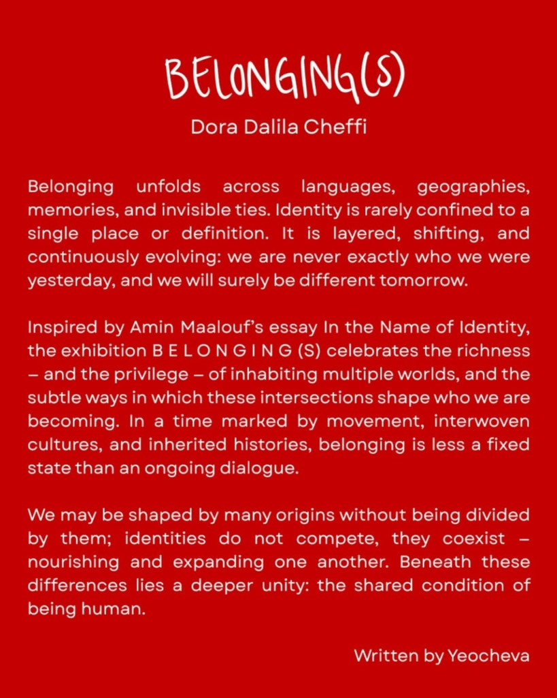

"Soul to Soul, Heart to Heart"
GOSHA, is the founder and Creative Director of UrArtU Flowers, and UrArtU Gallery.
"He believes that art is present in everything we create and experience."
UrArTu is built on the idea that art exists both in nature and in human craftsmanship.
His work transcends to combine visual artistry, floral designs, utilising both as forms of expression rather than separate disciplines.
Flowers are not just decorative, they are part of a larger artistic language used to explore connection, emotion, and creativity.
His approach focuses on shaping and presenting natural elements in a simple and contemporary juxtaposition. Staying connected to the broader art world through the gallery Space.
Gosha describes art as an exchange—"Soul to Soul, Heart to Heart"—highlighting the connection between the creator, the viewer, and the world around them.
In-studio program


Gurgen Yeritsyan, the founder of URARTU hosts hands-on sessions dedicated to floral designs. These workshops focus on the fundamentals of arranging fresh stems, guiding participants through the process of selecting materials, balancing colors, and shaping a composition from start to finish.
Sessions are both practical and accessible.
Participants work directly with seasonal materials, learning basic techniques used in professional arrangements.
On completion of the workshop, each participant leaves with their own finished pieces, a better understanding of how to create balanced and visually compelling botanical compositions.
The workshop can be tailored to offer a bespoke training to both individuals and company seminars.
For all booking inquiries, please contact:

Located in Al Serkhal avenue DXB, the Botanical Studies program is conceived as a contemporary design institution committed to the study of floral artistry as both a craft and cultural practice.
This program positions floristry at the intersection of material exploration, spatial design, and visual communication.
Students are encouraged to think critically about form, color, structure, and narrative, incorporating botanical elements as the essence within of the curriculum.
Instruction focuses on the creation of hand-tied bouquets, table arrangements, and larger sculptural compositions, gradually expanding towards spatial and installation-based floral work.
Alongside the botanical component, the program develops technical expertise in floral design.
Upon successful completion of the twelve-week program, participants will receive a certificate of completion acknowledging their achievement.
For more inquiries please contact:

USE THIS IMAGE TO DESCRIBE THE COLAB BETWEEN THE BOTH OF THEM YOU WILL FIND THE TEXTS IN THE HIGHLIGHTS OF PRESS.

Urartu is a contemporary gallery concept, defined by its avant-garde approach, showcasing a selection of cutting age international artists from across the globe.
With over a decade long history in flower design boutiques throughout Dubai's most prestigious locations.
Urartu can be traced to its early support of unique clientele including Gucci, Balenciaga, Porsche, Miu Miu, Sexy Fish, Ounass, Baccarat, Jimmy Choo, Bvlgari amongst others.
Today UrArtU unites these worlds in a single Space, from meditation and sound healing to floral design workshops and private venue events, each designed to engage the senses and inspire creativity.
At the heart of UrArtU lies the fusion of art and living beauty